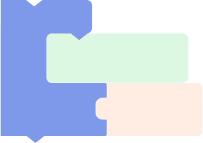

点击'运行'开始
开始运行程序
重新开始
重新开始运行程序
手机/平板
向左倾斜
手机状态事件发生后，程序从该程序块开始运行
触碰传感器
ID-1
状态为
单击
触碰传感器事件发生后，程序从该程序块开始运行
旋转舵机
ID:角度
时长
400
毫秒
让模型指定部位在指定时间内转动到一定角度
旋转舵机360°
ID:速度:方向
让模型指定部位像轮子一样旋转360°，可以指定方向和速度
执行
动作
时长
400
毫秒
让模型运动到已记录的姿势
如果
A
执行
B
若事件A发生，执行B
如果
A
B
否则
C
若事件A发生，执行B；若事件A不发生，执行C
重复
B
直到
A

若事件A发生之前重复执行B
当满足
A
重复
B
在事件A发生后重复执行B
等待
A
在事件A发生前处于等待状态
重复
3
次
A
让模型按次数重复执行A
等待
5000
毫秒
让模型等待设定的时间
模型电量低
判断模型电量是否低于20%
红外传感器
ID-1
与障碍物距离
<
1
判断红外传感器与障碍物的距离大小
手机/平板
向左倾斜
判断手机/平板的状态
陀螺仪
ID-1
航向
角
<
1
判断陀螺仪的角度值是否与你设定的角度值相同
播放音效
动物:熊
播放内置的音效或自己的录音
播放音调
C5
播放音调
显示表情
ID-1:眨眼
3
次
让Led灯显示表情
显示情景灯
ID-1:七彩跑马灯
3
次
让Led灯显示情景灯
显示灯光
ID-1:全亮
时长
3000
毫秒
让Led灯显示灯光
红外传感器
ID-1
与障碍物距离
获取红外传感器与障碍物的距离值
陀螺仪
ID-1
航向角
角度
获取陀螺仪航向角、横滚角或俯仰角的角度值
舵机
ID-1
角度
获取舵机的角度值
设置陀螺仪
ID-1
全部角度为0°
将陀螺仪当前位置的全部角度置为0°
1
整数值
变量
设置变量
设置
变量
0
为变量赋值
限制
50
介于
1
到
100
限制数字的最小和最大值
介于
0
到
100
的随机整数
返回随机数
判断两个整数值的大小
1
+
1
对数值进行加减乘除
与
两个事件都为发生时，返回“真”
非
当事件发生时，返回“假”；当事件不发生时，返回“真”
或
两个事件只要发生一个，返回“真”
变量
+
0
变量增加、减少